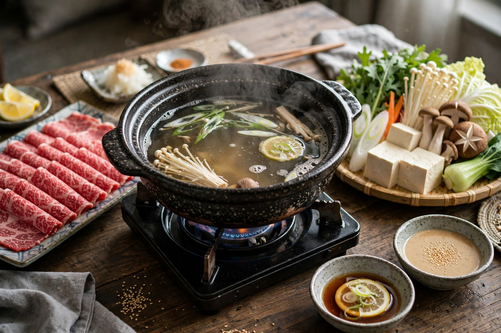

From Wikipedia, the free encyclopedia
| Shabu-shabu | |
|---|---|
 Shabu-shabu with sliced beef and vegetables | |
| Type | Hot pot (nabemono) |
| Place of origin | Japan (Osaka, 1950s) |
| Main ingredients | Thinly sliced beef (or pork), vegetables, tofu, noodles |
| Broth | Kombu dashi, lightly seasoned |
| Sauces | Ponzu; sesame (gomadare) |
Shabu-shabu (Japanese: しゃぶしゃぶ) is a Japanese nabemono hotpot dish of thinly sliced meat and vegetables boiled in water and served with dipping sauces. The term is onomatopoeic, derived from the "swish swish" sound emitted when the ingredients are stirred in the cooking pot. The dish was popularised in Osaka in the 1950s, at the restaurant Suehiro, which trademarked the name in 1955; its cooking method was adapted from the Chinese hot pot tradition of instantly boiled mutton.
A pot of water or light dashi made with kombu (kelp) is brought to a gentle boil at the table. Diners take a slice of raw meat — most prized is well-marbled beef, cut paper-thin, though pork, chicken, crab and other seafood are also used — and swish it back and forth in the broth for a few seconds until just cooked. Leafy vegetables such as napa cabbage and chrysanthemum greens, mushrooms, carrots, tofu, seaweed and udon noodles are cooked in the same broth, which grows richer as the meal progresses. Cooked items are dipped in ponzu (citrus soy) or sesame sauce, typically with grated daikon, garlic or chilli. At the end, the flavourful broth is often used to cook noodles or rice porridge (zōsui), sometimes with the meal's rice and a beaten egg.
Shabu-shabu differs from sukiyaki in using a plainer water-based broth and dipping sauces rather than a sweet soy cooking liquid. Regional and international variations include spicy broths, divided "yuanyang" pots, and Taiwanese shabu-shabu restaurants where individual pots and set menus became a ubiquitous casual dining format.
See also: Hot pot · Sukiyaki · Japanese cuisine